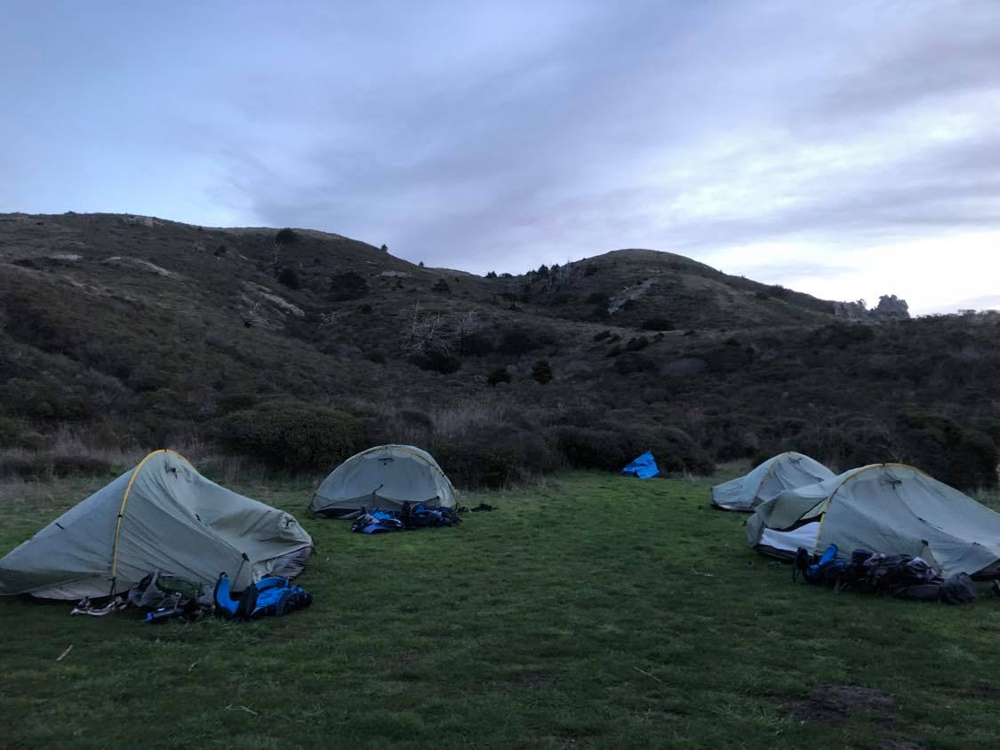
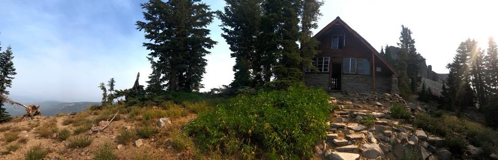
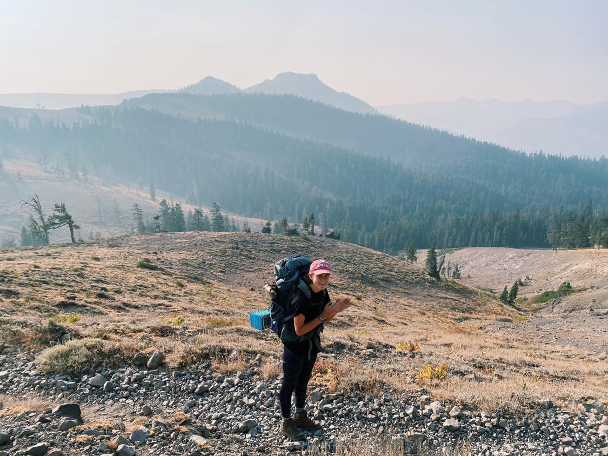
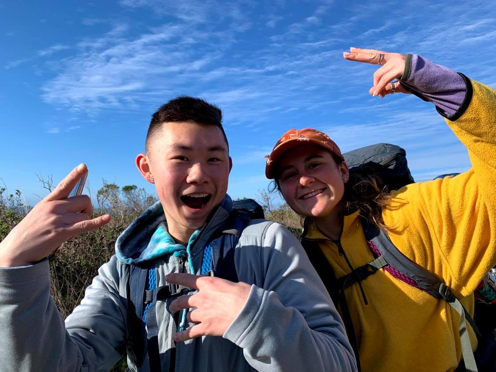
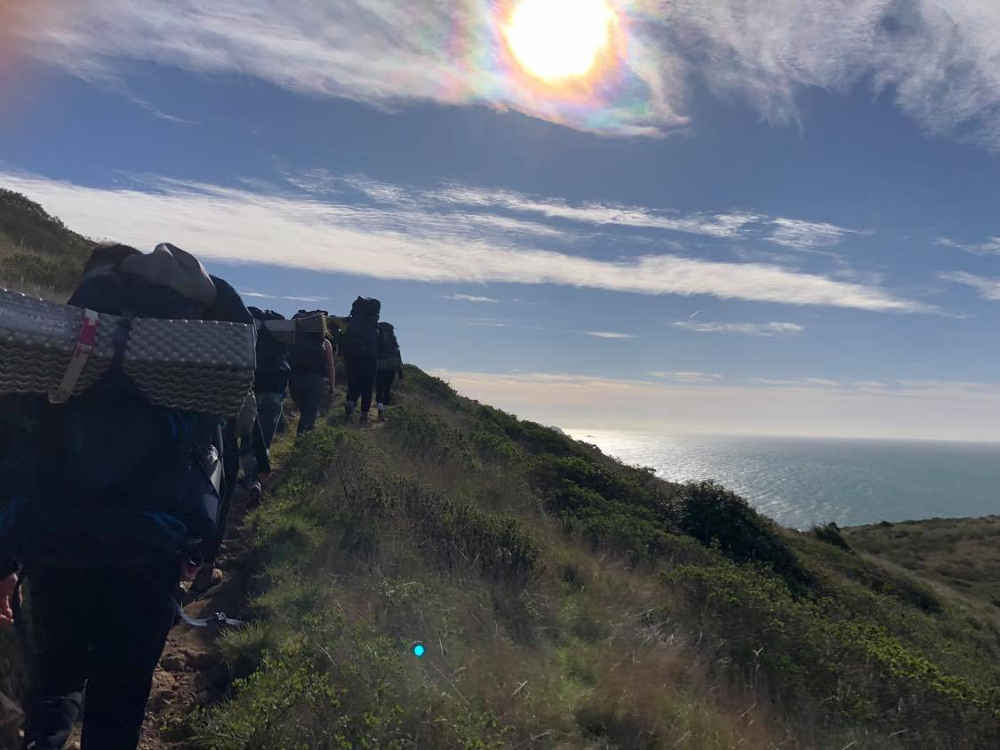
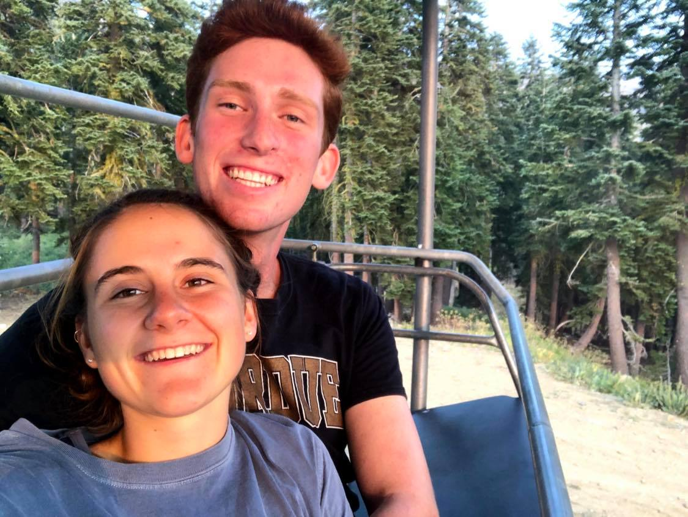
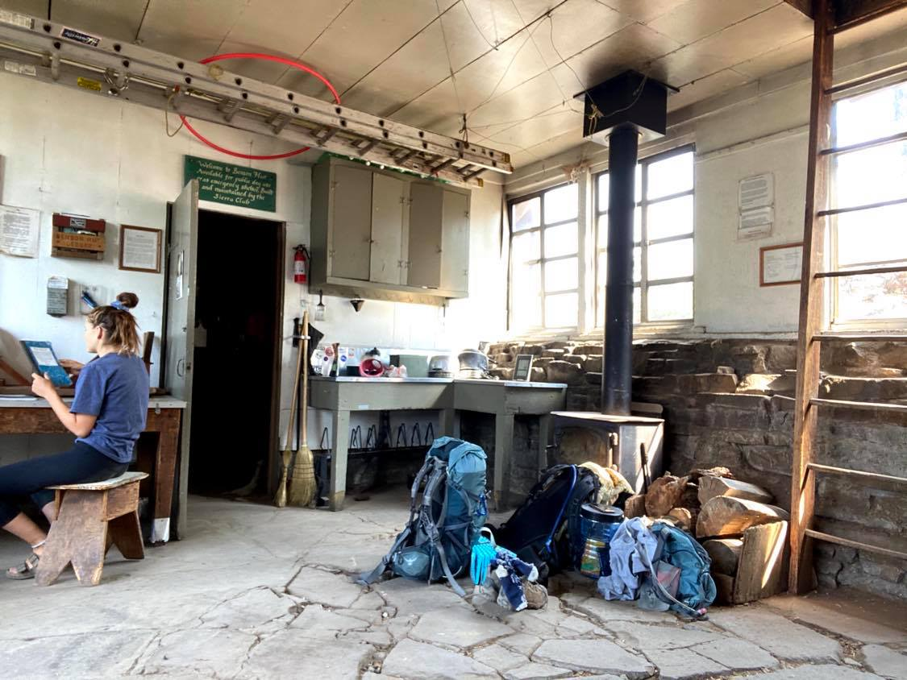
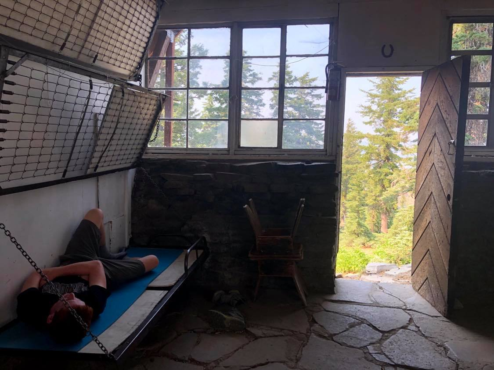

CALIFORNIA: NORTH SECTION



The North California section is a perfect short getaway from the Bay Area.
Point Reyes and Tahoe National Forest are located in this section and there are so many trail options to pick from.
Feel free to checkout some trips I have done in both of these areas.
POINT REYES: BEAR VALLEY TO COASTAL TRAIL
Level: Moderate ~ 10 miles
Location: Point Reyes National Seashore


I am a part of a backpacking club at my university, and I did this trip with 10 other club members in February 2020. This is a more enjoyable trip and not strenuous at all. Great beginner hike to try out backpacking.
POINT REYES ITINERARY
DAY 1 ~ Parking lot to beach campground, 5 miles. Beginning of the trail is mostly uphill but once you get a view of the ocean it is all downhill to the campground. It took the group about 3 hours to get to the beach. Once we made it we all hung out by the beach and watched the sunset and then prepared dinner at our campsite.
DAY 2 ~ Beach campground to parking lot, 5 miles. We woke up early for an amazing sunrise that lit up the coast. Then we all packed up shop and hiked the same trail back. If you have time once you get back to the car and you are hungry, check out Sol Food in Marin for AMAZING Puerto Rican food.
TAHOE NATIONAL FOREST: BENSON HUT AND TINKERS KNOB TRAIL
Level: Moderate ~ 15.3 miles
Location: Tahoe National Forest

Conquered Tinker Knob and Benson Hut in the middle of California fire season during summer 2020! This trail provides a beautiful overlook of the Tahoe mountains and numerous wildflowers. And another bonus of this trail is that there is a hut that you can spend the night in, which helped us not get totally smoked out ;)
BENSON HUT AND TINKERS KNOB: ITINERARY
DAY 1 ~ Parking lot to Mt. Judah Express, 2.1 miles. We arrived the first day pretty late so we just backpacked a little into the trail until we came across a ski lift. This was a really awesome camping spot! We watched the sunset in the smokey clouds while sitting on a ski lift chair.


DAY 2 ~ Mt. Judah Express to Tinkers Knob, 7.6 miles. We sent it up to top of Tinkers Knob and then decided to chill the rest of the day in Benson to save our lungs from the air quality. BEWARE: It is believed that Benson Hut may be haunted by a World War II soldier. We slept the night on the second floor floor and throughout the night I heard footsteps coming up the front door, but there was never anyone there... believe what you want though.
DAY 3 ~ Benson Hut to Parking lot, 5.8 miles. After a restless night we made it back to the parking lot. Overall I think Benson Hut is a must-see if you do this trail. There are fun random games and journals in the hut, but up to you if you would like to spend the night!
Back to Home